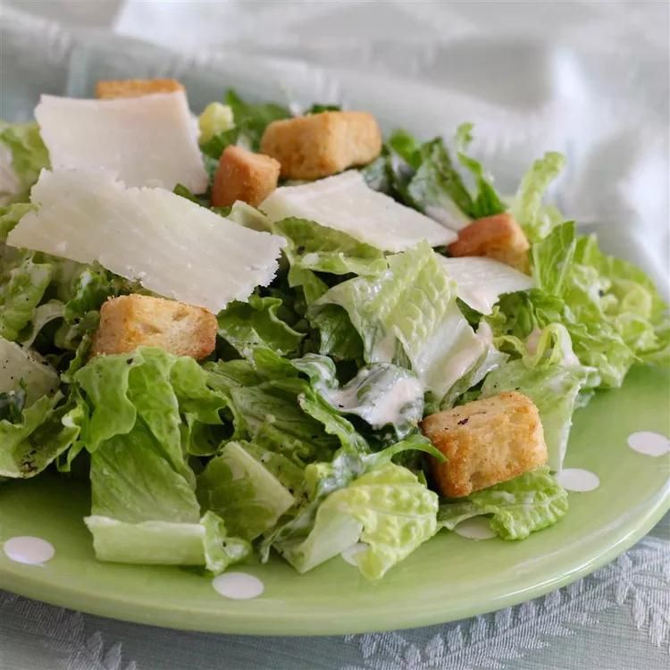

Caesar Salad Dressing

Description
This is an unbelievable, restaurant-quality, creamy Caesar salad dressing
that will make you swear off of anything store-bought again.
Great for your classic Caesar salad, or as a dip for all kinds of veggies.
Will NOT disappoint!
Ingredients
- 2 anchovy fillets
- 2 cloves garlic, chopped, or to taste
- 1 cup mayonnaise
- ⅓ cup grated Parmesan cheese
- ¼ cup half-and-half
- 2 tablespoons fresh lemon juice
- 1 tablespoon Dijon mustard
- 2 teaspoons Worcestershire sauce
Steps
-
Combine anchovy fillets with garlic in a food processor and pulse
several times to form a paste. Process mayonnaise, Parmesan cheese,
half-and-half, lemon juice, Dijon mustard, and Worcestershire sauce with
anchovy mixture until dressing is creamy. Refrigerate for 1 hour or more
before serving.
-
To serve, toss with chopped romaine in a salad bowl and shave Parmesan
cheese on top of salad; season with salt, black pepper, and a squeeze of
fresh lemon juice.